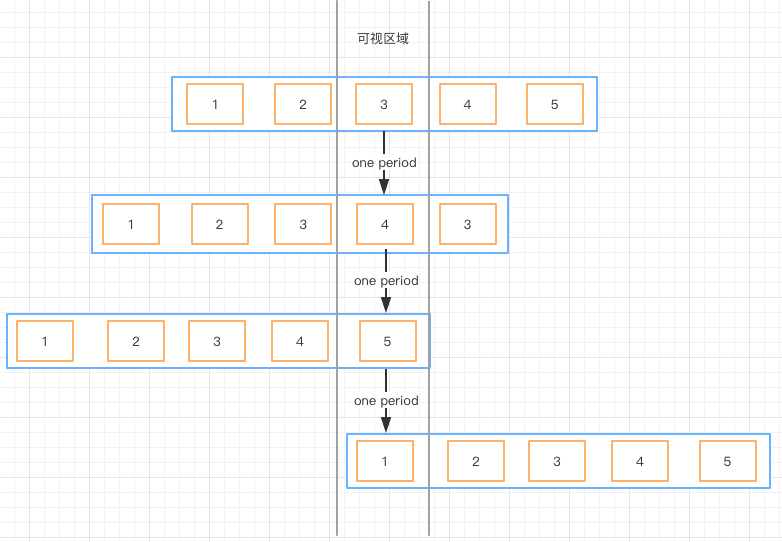

图片轮播，这其实已经是一个烂大街的功能，到处可见；网上也有很多现成的组件，那为什么我还要自己来实现呢？主要的原因有两个
一个是网上的组件良莠不齐，在pc跑跑还可以，到了移动端，各种卡。 另外一个原因，是因为有诸多定制化的交互要实现，所以还是自己用原生js写了一个移动端的轮播组件。
在自己撸代码之前，还是要先瞄一瞄别人的实现的，正所谓：不看白不看。下面列举两种网上比较通用的轮播方案

方案一在轮播至边界时，需要从这一端快速滑动至另外一端，效果不佳； 方案二对边界轮播做了优化，但还是略显不足；
先来看看，原创方案的示意图！